A Panco já tem espaço na loja. Agora esse espaço precisa trabalhar pela marca.
Organizar todas as categorias da Panco no ponto de venda, sem criar complexidade nem investimento desnecessário para o Trade e para a loja.
Na gôndolaNos pontos extrasNo controle, com QRPeças em AR
01
75Quem faz
Trade feito por quem já esteve dos dois lados do balcão.
Varejo e indústria na mesma mesa. A 75 LAB cria, fabrica, instala e mede o ponto de venda.
+0anos entre indústria e varejo
0marcas atendidas em 2025 e 2026
0plataformas próprias de trade
De ponta a ponta, num time só
01Estratégia
02Key visual
03Projeto executivo
04Produção
05Instalação
06Medição
Marcas que confiam na 75 LAB
Lactalis
Nestlé
Seara
Panco
Savencia
Panasonic
SEMP
Alltak
Fonte: 75 LAB, carteira de clientes de 2025 e 2026.
02
→O percurso
Esta conversa tem quatro passos, em treze minutos
PASSO 01
A dor
Organizar todas as categorias da Panco no ponto de venda, com quatro faces que vimos na loja.
PASSO 02
A resposta, em três frentes
Na gôndolaIdentificação por categoria, na peça pequena que cabe em qualquer móvel.
Nos pontos extrasIlha, ponta e cabeceira envelopadas para destacar uma categoria.
No controleQR em cada peça, falando com o shopper e registrando a loja.
PASSO 03
A escolha
Na mesma verba, concentrar numa loja ou aparecer em muitas.
PASSO 04
O próximo passo
Quatro formas de começar, e nenhuma depende das outras.
Pelo caminho: as peças em AR, no tamanho real, e uma demonstração do QR para escanear agora.
03
01Por que organizar por categoria
A Panco joga em quatro categorias que, juntas, movimentam R$ 69 bilhões
R$ 0 bifaturamento de biscoitos, pães, massas e bolos industrializados em 2025
0%do varejo alimentar já passa pelo atacarejo, onde a gôndola é outra
Biscoitos
R$ 34,1 bi
Pães industrializados
R$ 16,5 bi
Massas
R$ 15,5 bi
Bolos industrializados
R$ 2,9 bi
Oito linhas da mesma marca disputam quatro corredores de compra. Quando nada separa uma da outra, o shopper que procura bolo encontra pão, e a categoria que puxa valor some no meio do bloco.
Fonte: ABIMAPI, faturamento 2025 por categoria (biscoitos, pães industrializados, massas e bolos industrializados); ABRAS, Ranking ABRAS 2026 (participação do atacarejo).
04
01A dor
Quatro coisas que vimos na loja, e as quatro são a mesma dor
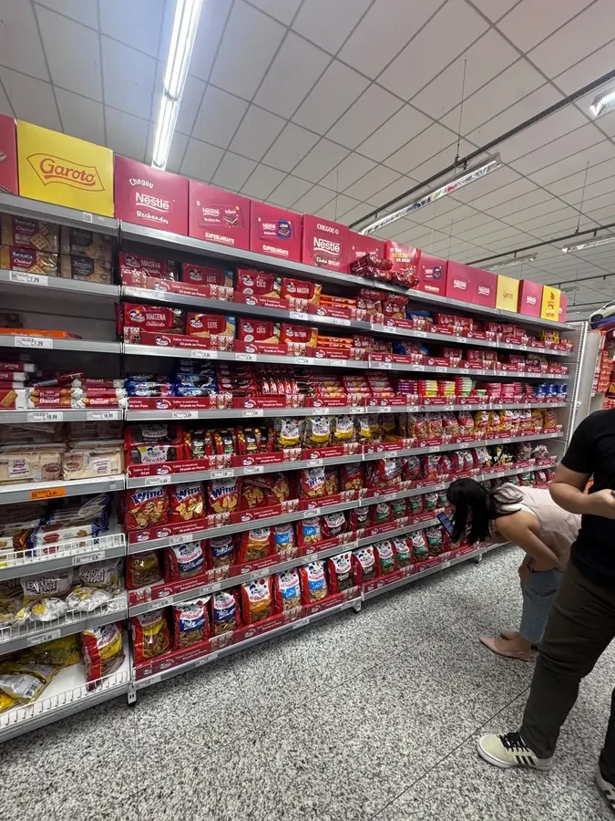
01A marca não se lê de longe
A gôndola é uma faixa contínua de produto. A dez metros, o bloco inteiro vira uma coisa só.
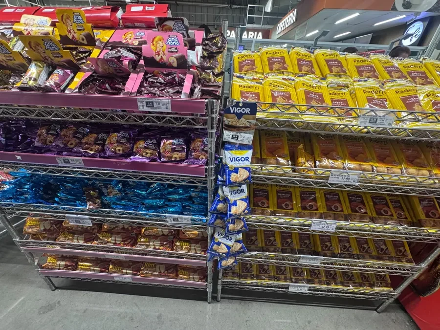
02As categorias se misturam
Pão, bolo, rosca e marca de terceiro no mesmo bloco. Nada separa uma categoria da outra.
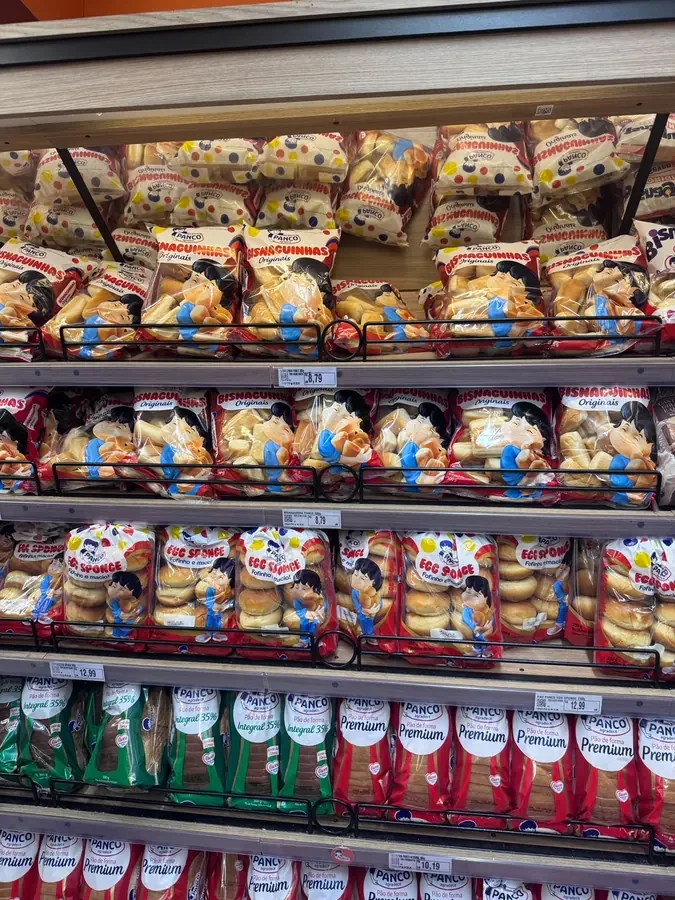
03A exposição apaga o produto
Aramado e nicho na sombra. A embalagem perde cor onde a decisão acontece.
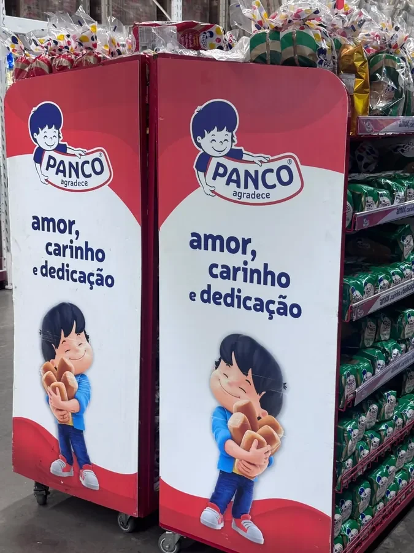
04Falta peça para a gôndola
O material que existe é display de ponta. Na gôndola, onde está o giro, não existe peça.
Falta um sistema que diga onde cada categoria começaÉ isso que a proposta resolve, em três frentes
Fonte: registro fotográfico do Trade Visit da 75 LAB, feito em loja antes desta proposta.
05
02A resposta
Cada frente ataca uma parte da dor, e juntas cobrem as quatro
01 Ler a marca de longe
02 Separar as categorias
03 Destacar o produto
04 Ter peça na gôndola
3frentes para 4 dores
A linguagem muda de uma peça para outra: elas vêm de momentos diferentes e nenhuma saiu de briefing da Panco. O que se propõe é a estrutura, não a mensagem.
06
F1Frente 01 · na gôndola
Na gôndola, cada categoria ganha a sua própria identificação
Pães
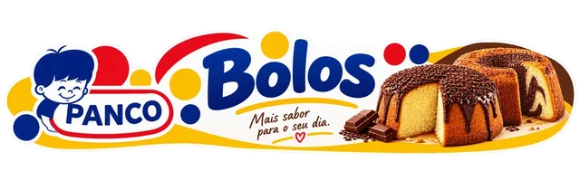
Bolos
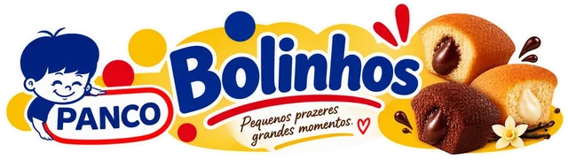
Bolinhos
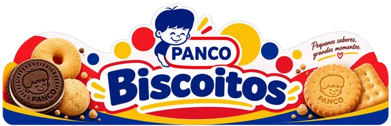
Biscoitos
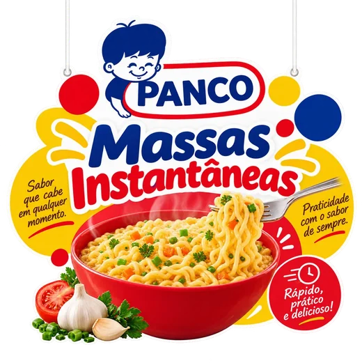
Massas
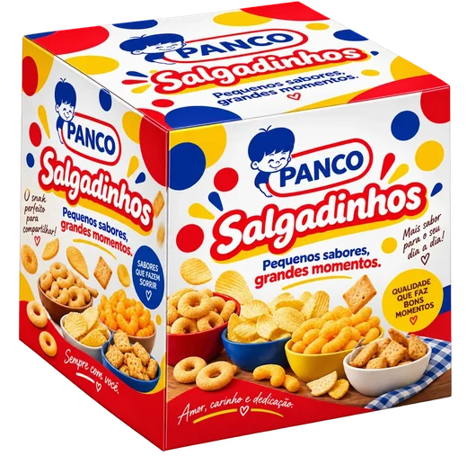
Salgadinhos
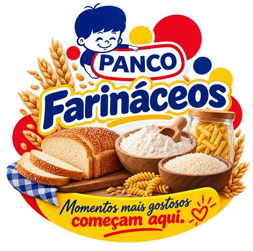
Farináceos
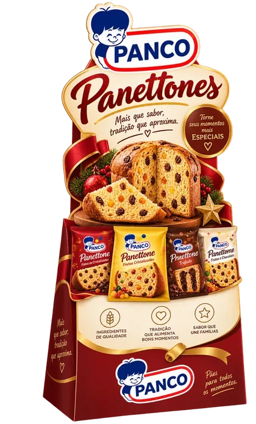
Panettones
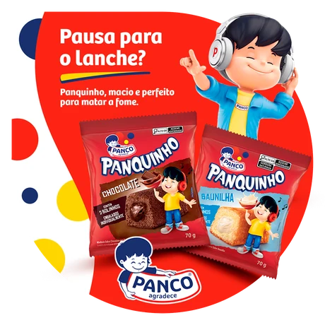
Wobbler15 × 15 cm
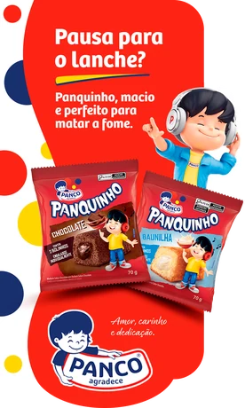
Stopper15 × 25 cm
Medidas de referência: cada peça é ajustada ao móvel e ao formato de loja. A comunicação é de marcação e mostra onde entram marca, categoria e preço; a linguagem única vem com o escopo de marketing da Panco.
0categorias da Panco, cada uma com a sua peça já desenhada
0formatos que levam a arte e se ajustam a qualquer móvel
0móvel novo: é a peça mais barata do sistema e a que chega a mais lojas de uma vez
07
F2Frente 02 · nos pontos extras
Nos pontos extras, o envelopamento põe uma categoria em destaque
O caso: área de sobremesa sem móvel novo
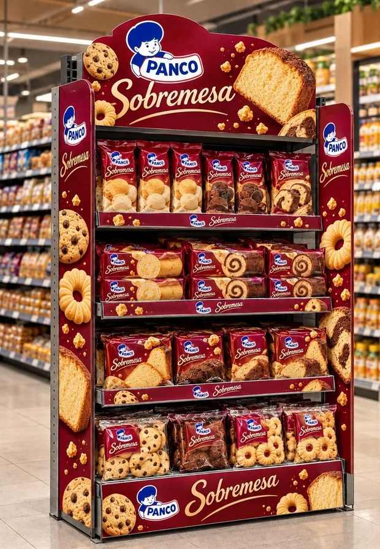
Sobremesa foi a categoria do desafio, não a regra. Se a loja pedir pães, bolos ou biscoitos, o movimento é o mesmo: muda o KV e o mix, não a estrutura.
Seis estruturas para envelopar · toque em AR para ver no tamanho real
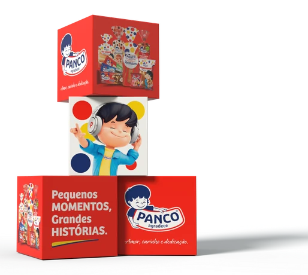
Cubo45 × 45 cm
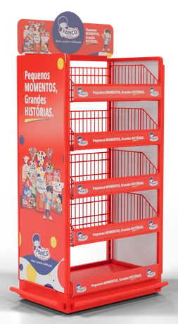
Módulo central0,70 × 0,50 m
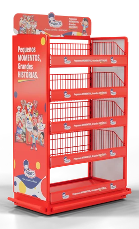
Cabeceira1,00 × 0,50 m
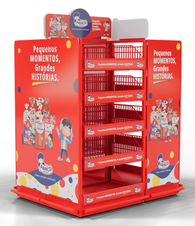
Ilha 1 palete1,20 × 1,00 m
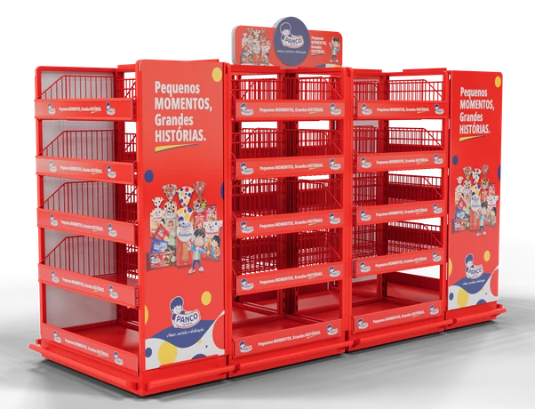
Ilha 2 paletes2,40 × 1,00 m
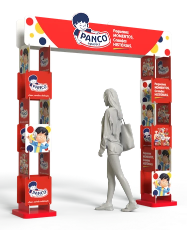
Pórticopor vão de loja
Simples de montar, abastecer e trocar. Mudar a categoria em destaque é refazer o envelopamento, não a estrutura.
O que isso muda: a Panco escolhe qual categoria precisa de empurrão, loja a loja, sem refazer o projeto.
08
F2O caso máximo
A Estação Café da Manhã responde às quatro dores numa peça só
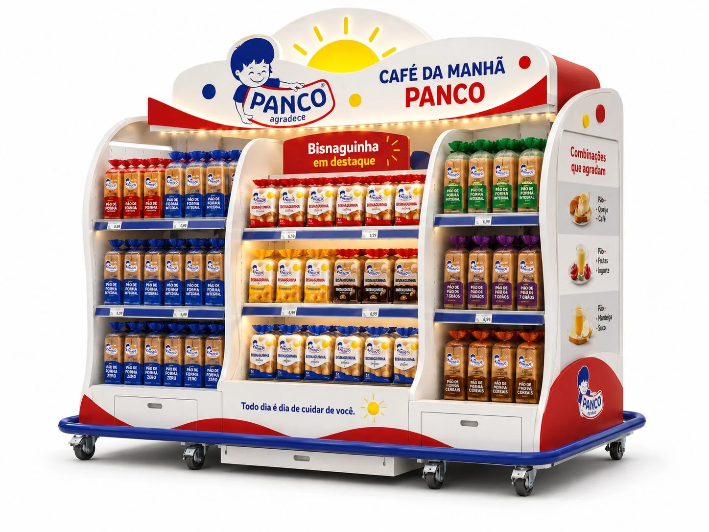
01020304
01
Lida a dez metrosMarca e ocasião reconhecidas antes de o shopper chegar perto.
02
Organiza o mixO produto se arruma por momento de consumo, não por código de SKU.
03
Ilumina e destacaPrateleira iluminada e a Bisnaguinha com a maior massa de frentes.
04
Opera por trásAbastece com palete, guarda reposição em gaveta e move com paleteira.
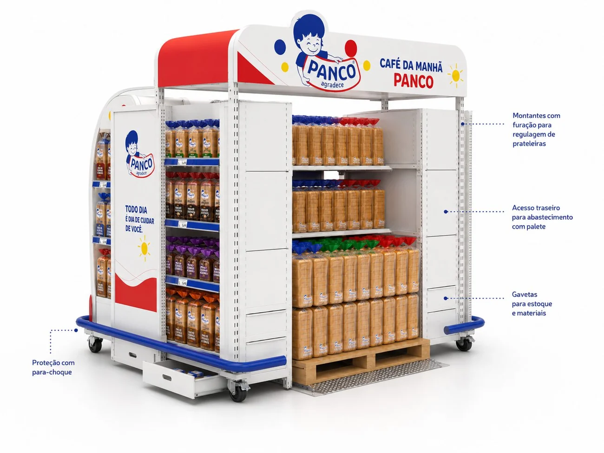
A estrutura por dentro
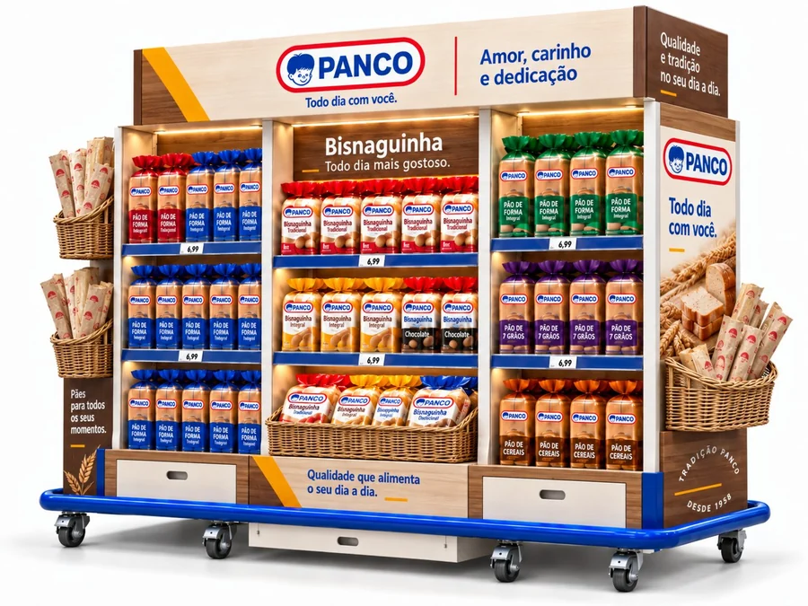
Em tom adulto
É a peça que resolve as quatro dores de uma vez, e por isso também é a que concentra mais investimento numa loja só.
09
ARRealidade aumentada
Antes de produzir, a peça já cabe no corredor da loja
Ilha 1 palete1,20 × 1,00 × 1,60 m
Arraste para girar
Aponte a câmera e coloque a peça no chão, em tamanho realiPhone abre direto no AR Quick Look. Android abre no navegador. Sem app. projetos.75lab.com.br/ar/panco-pecas-pdv
10
F3Frente 03 · no controle
O mesmo QR fala com o shopper e registra a peça na loja
Escaneie agora, é uma peça de demonstração
Este é o QR de uma testeira de Pães. Abra como shopper ou como promotor e veja as duas pontas funcionando.
Funciona em qualquer material, produzido com a 75 LAB ou com outro fornecedor. Serve para medir a operação inteira, e entra como escopo opcional por frente.
11
03A escolha
Na mesma verba, dá para concentrar numa loja ou aparecer em muitas
Não é peça cara contra peça barata: é profundidade numa loja contra alcance na rede. A conta de cada rota sai por peça, medida e tiragem, no documento comercial.Esquema ilustrativo, sem escala
12
04O próximo passo
Quatro formas de começar com a 75 LAB, e nenhuma depende das outras
A
Projeto pontualEscopo, entregáveis, prazo e orçamento fechados para uma entrega só.o caminho mais curto
B
Fee mensalPlanejamento recorrente de Trade e PDV, dentro de escopo e capacidade acordados.quando a demanda é contínua
C
Produção das peçasA Panco traz a arte que já tem e a gente produz pela nossa rede de parceiros, respondendo pelo resultado.sem projeto novo
D
Rastreio por QRFunciona no material que a Panco imprimir em qualquer gráfica, inclusive fora da nossa rede.plug and play
Quem aprovaSponsor na Panco e interlocutor em Compras
Parâmetro de verbaFaixa de investimento ou método de orçamento
Próximo marcoData e o que precisa estar pronto nela
O que não entra automaticamente no fee: produção física, matéria-prima, instalação, logística e terceiros. Esses itens vão para o contrato ou para orçamento à parte.
O QR não depende das outras três. Pode entrar sozinho, no material que a Panco já produz hoje, com a gráfica que já produz hoje.
13
♥Obrigado
O espaço a Panco já tem. A gente faz ele trabalhar.
Daniel CoimbraDiretor Administrativo e Comercial daniel.coimbra@75lab.com.br · 11 99127-0939
VM
Vanessa MorelliComercial 11 98398-2803
75 LAB Estratégia, Design e Produção Ltda · CNPJ 55.470.982/0001-77 CENU, Torre Norte, Av. das Nações Unidas, 12.901, Brooklin, São Paulo, SP · contato@75lab.com.br · 75lab.com.br
14
×
Fora do percurso da apresentação
Outras oportunidades para construirmos juntos
Embalagem e redesenho
Arquitetura de marca na embalagem, hierarquia de linha e leitura na gôndola.
Panetone e Natal
Embalagem, enxoval de PDV e exposição sazonal, com calendário próprio e janela curta.
Ativações e portfólio
Mecânicas promocionais, lançamento de linha e novas oportunidades de portfólio no ponto de venda.
São oportunidades a explorar com a Panco, não briefings confirmados.